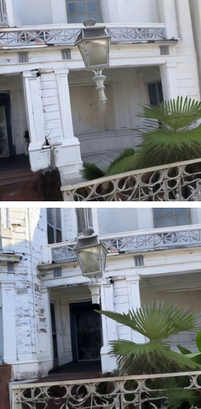
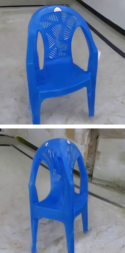

Analyzing Adversarial Losses for Out-of-Domain Generalization in Feed-Forward 3D Reconstruction
Supplementary Material
Reconstruction of Stable Virtual Camera scenes generated from a single SWORD image
Compared to existing methods, our LPIPS+GAN training scheme produces reconstructions with improved perceptual quality from 3D-inconsistent diffusion-generated inputs.
| Input | latentSplat | MVSplat | NoPoSplat | Our NoPoSplat |
|  | ||||
Reconstruction of Stable Virtual Camera scenes generated from a single LAION-Aesthetics image
| Input | latentSplat | MVSplat | NoPoSplat | Our NoPoSplat |
Reconstruction of Stable Virtual Camera scenes generated from a single uCO3D image
| Input | latentSplat | MVSplat | NoPoSplat | Our NoPoSplat |
Reconstruction of DimensionX scenes generated from a single uCO3D image
| Input | latentSplat | MVSplat | NoPoSplat | Our NoPoSplat |
|  | ||||
Reconstruction of uCO3D Dynamic Scenes
Compared to existing methods, our LPIPS+GAN training scheme produces reconstructions with improved perceptual quality in the presence of slight 3D inconsistencies due to motion.
| Input | latentSplat | MVSplat | NoPoSplat | Our NoPoSplat |
|
|